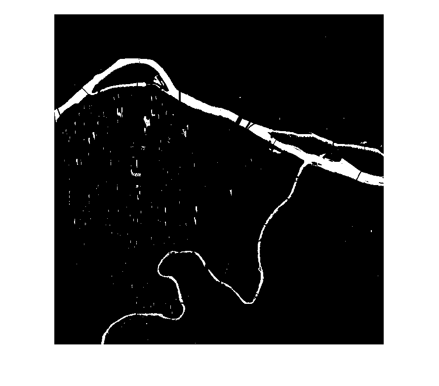
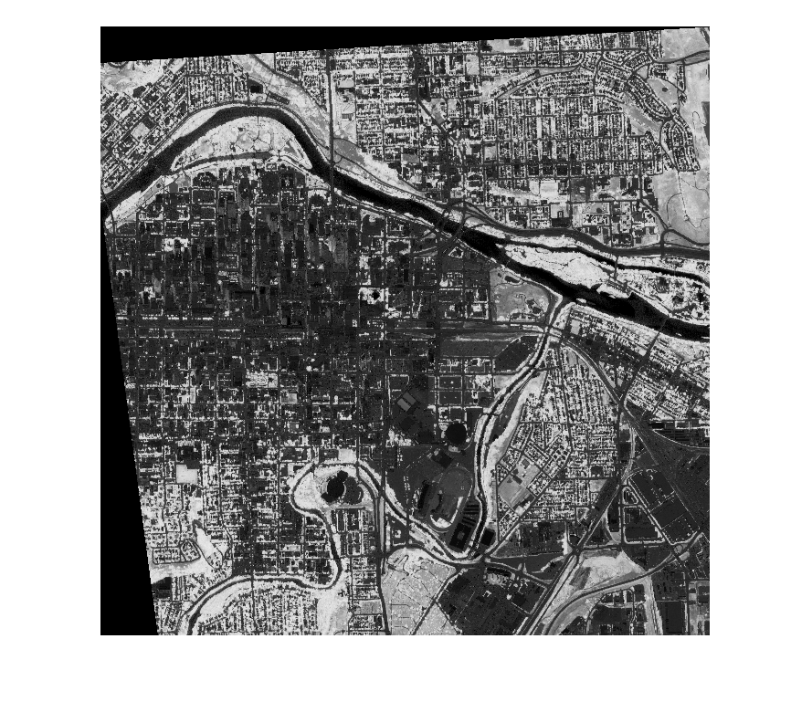
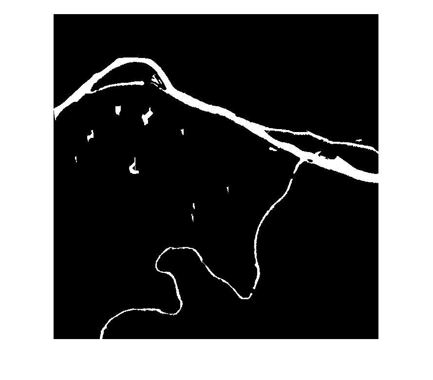

Contents
function [water_mask, Mask_filled, nedgelist]=NRBC (str_Water_Mask, str_NDVI, level, scale, bPath_filter, Max_River_width, Mask_ignore_area_size,min_length) % The NRBC to connect water segments with an assistant NDVI imagery % Input: % str_Water_Mask: the path to the input Water mask file, preferred GeoTIFF file % str_NDVI: the NDVI mask with the same dimesion as the water mask, % please scale the NDVI to 0 -1000 (1000 means dense vegetaiton) % optional parameters: % scale : %the image pyrimad scale (optional, default is 2 ) % level: %the image pyrimad level (optional, default is 5 % bPath_filter: % default (is 0) not run the path filter since it is very slow % Max_River_width: optional, estimated river width (in pixels) % Mask_ignore_area_size: optional, estimated ignore hole size (in pixels) % % Max_River_width=150; %used to give the final central line and remove spurs % Mask_ignore_area_size=200; %used to fill the little holes less than 200 pixels % min_length=100; % the length small than min_length will be filtered % % Function output: % water_mask: the input original water mask % Mask_filled: the water mask aftr connection and filtering % nedgelist: the edge list for the centerline. % % Output files: % ".\Results\####_mask.tif": the connected river mask % ".\Results\####_edgelist.shp": the shapefile of the centerline % % Environment: Relied on Models & Version: % 'Image Processing Toolbox' '9.2' % 'Mapping Toolbox' '4.1' % 'MATLAB' '8.5' % 'Neural Network Toolbox' '8.3' % 'Statistics and Machine Learning Toolbox' '10.0' % % DEMO example: [water_mask_orgin, Mask_connected, edge_list]=NRBC ('.\Test_Data\WaterMask_bin.tif', '.\Test_Data\NDVI.tif');
initialize and data input
clc; switch nargin % input check case 2 scale=2; %the image pyrimad scale is 2 level=5; %the image pyrimad level is 5 bPath_filter=0; % default not run the path filter since it is very slow Max_River_width=150; %used to give the final central line and remove spurs Mask_ignore_area_size=200; %used to fill the little holes less than 200 pixels min_length=100; % the length small than min_length will be filtered case 3 scale=2; bPath_filter=0; Max_River_width=150; Mask_ignore_area_size=200; min_length=100; case 4 bPath_filter=0; Max_River_width=150; Mask_ignore_area_size=200; min_length=100; case 5 Max_River_width=150; Mask_ignore_area_size=200; min_length=100; case 6 Mask_ignore_area_size=200; min_length=100; case 7 min_length=100; case 8 otherwise disp('incorrect number of input, will exit') return; end [water_mask, R_mask] = geotiffread(str_Water_Mask); [NDVI, R_NDVI] = geotiffread(str_NDVI); info = geotiffinfo(str_Water_Mask); T_NDVI=0.5; %the threshold for NDVI is 50% of denstest vegetation NDVI(NDVI>1000)=0; % check the NDVI layer NDVI(NDVI<0)=0; disp('Finished input image loading')
Finished input image loading Warning: Image is too big to fit on screen; displaying at 33% Warning: Image is too big to fit on screen; displaying at 33% 
image pre-processing
1. start to refine the image by removing the small object and fill small holes
%remove the small patches Conn_comp= bwconncomp(water_mask); numPixels = cellfun(@numel,Conn_comp.PixelIdxList); %retrieve the number of pixels in each object Small_Patch_idx=find(numPixels<Mask_ignore_area_size);%find the patches with area < T water_mask_larger_Area=water_mask; for idx = 1: length(Small_Patch_idx) %remove the areas with smaller objects water_mask_larger_Area(Conn_comp.PixelIdxList{Small_Patch_idx(idx)})=0; end %fille the small holes water_mask_larger_Area_fill= ~bwareaopen(~water_mask_larger_Area, Mask_ignore_area_size); % to display the progress on the screen disp('Finished data pre-procesing')
Finished data pre-procesing
Image pyramid construction
%---------construct the pyramid (details please see in the paper)----- Img_pyr_array= cell(level,1); NDVI_pyr_array= cell(level,1); Img_intermediate_array= cell(level,1); Img_pyr_array{1}=Image_Pyrimad(water_mask_larger_Area_fill,scale); NDVI_pyr_array{1}=Image_Pyrimad(NDVI,scale); for idx=2:level Img_pyr_array{idx}=Image_Pyrimad(Img_pyr_array{idx-1},scale); NDVI_pyr_array{idx}=Image_Pyrimad(NDVI_pyr_array{idx-1},scale); end % -----------topology deliveray ------------ T_NDVI=min(NDVI(:))+T_NDVI*range(NDVI(:)); %threshold for the NDVI Img_intermediate_array{level-1}=Image_Morph_connection(Img_pyr_array{level-1},Img_pyr_array{level},NDVI_pyr_array{level-1}>T_NDVI,scale,1); for idx=2:(level-1) Img_intermediate_array{level-idx}=Image_Morph_connection(Img_pyr_array{level-idx},Img_intermediate_array{level-idx+1},NDVI_pyr_array{level-idx}>T_NDVI,scale,idx); end Img_connected=Image_Morph_connection(water_mask_larger_Area_fill,Img_intermediate_array{1},NDVI>T_NDVI,scale,level); clear Img_pyr_array NDVI_pyr_array Img_intermediate_array % clear Img_pyr_Lev* NDVI_pyr_Lev* Img_intermediate disp('Finished Image pyrimad construction') %fill the little holes Img_connected= ~bwareaopen(~Img_connected, Mask_ignore_area_size);
Finished Image pyrimad construction Warning: Image is too big to fit on screen; displaying at 33%
River segment connection by NRBC
%------------------core function: run the river patch connection-------------- [Mask_filled Mask_new_parts]=River_Patch_connection(water_mask_larger_Area_fill,Img_connected,fix(scale^level*sqrt(2))); disp('Finished water patch connection')
Debug: current processing patch: 1
Debug: process potential connected neighbour patch:2
Debug: extend central_line not long enough-->Neigh
Debug: successful case; fill this neighbour patch
Debug: current processing patch: 2
Debug: process potential connected neighbour patch:4
Debug: extend central_line not long enough-->Neigh
Debug: successful case; fill this neighbour patch
Debug: current processing patch: 3
Debug: current processing patch: 4
Debug: reach the end of central line
Debug: process potential connected neighbour patch:7
Debug: successful case; fill this neighbour patch
Debug: process potential connected neighbour patch:15
Debug: successful case; fill this neighbour patch
Debug: current processing patch: 5
Debug: process potential connected neighbour patch:6
Debug: failed case: Length along central direction is shorter than expected
Debug: current processing patch: 6
Debug: process potential connected neighbour patch:5
Debug: failed case: Length along central direction is shorter than expected
Debug: current processing patch: 7
Debug: process potential connected neighbour patch:14
Debug: successful case; fill this neighbour patch
Debug: current processing patch: 8
Debug: process potential connected neighbour patch:13
Debug: extend central_line not long enough-->Neigh
Debug: successful case; fill this neighbour patch
Debug: current processing patch: 9
Debug: process potential connected neighbour patch:10
Debug: failed case: Length along central direction is shorter than expected
Debug: current processing patch: 10
Debug: process potential connected neighbour patch:9
Debug: failed case: Length along central direction is shorter than expected
Debug: current processing patch: 11
Debug: detected loop, exit the current search
at start point (col, row): 484, 964
Debug: process potential connected neighbour patch:12
Debug: failed case: Length along central direction is shorter than expected
Debug: current processing patch: 12
Debug: The central_line gap is larger than threshold: 45
at start point (col, row): 499, 915
Debug: The central_line gap is larger than threshold: 45
at start point (col, row): 503, 931
Debug: current processing patch: 13
Debug: reach the end of central line
Debug: process potential connected neighbour patch:20
Debug: successful case; fill this neighbour patch
Debug: current processing patch: 14
Debug: current processing patch: 15
Debug: reach the end of central line
Debug: reach the end of central line
Debug: process potential connected neighbour patch:25
Debug: successful case; fill this neighbour patch
Debug: current processing patch: 16
Debug: process potential connected neighbour patch:17
Debug: failed case: Length along central direction is shorter than expected
Debug: current processing patch: 17
Debug: process potential connected neighbour patch:16
Debug: failed case: Length along central direction is shorter than expected
Debug: current processing patch: 18
Debug: reach the end of central line
Debug: current processing patch: 19
Debug: current processing patch: 20
Debug: process potential connected neighbour patch:21
Debug: successful case; fill this neighbour patch
Debug: current processing patch: 21
Debug: reach the end of central line
Debug: process potential connected neighbour patch:23
Debug: extend central_line not long enough-->Neigh
Debug: successful case; fill this neighbour patch
Debug: current processing patch: 22
Debug: current processing patch: 23
Debug: process potential connected neighbour patch:24
Debug: extend central_line not long enough-->Ref
Debug: successful case; fill this neighbour patch
Debug: current processing patch: 24
Debug: process potential connected neighbour patch:28
Debug: failed case: Length along central direction is shorter than expected
Debug: current processing patch: 25
Debug: process potential connected neighbour patch:33
Debug: extend central_line not long enough-->Ref
Debug: successful case; fill this neighbour patch
Debug: current processing patch: 26
Debug: reach the end of central line
Debug: current processing patch: 27
Debug: current processing patch: 28
Debug: process potential connected neighbour patch:24
Debug: failed case: Length along central direction is shorter than expected
Debug: process potential connected neighbour patch:30
Debug: extend central_line not long enough-->Ref
Debug: successful case; fill this neighbour patch
Debug: current processing patch: 29
Debug: current processing patch: 30
Debug: process potential connected neighbour patch:31
Debug: successful case; fill this neighbour patch
Debug: current processing patch: 31
Debug: reach the end of central line
Debug: current processing patch: 32
Debug: current processing patch: 33
Debug: process potential connected neighbour patch:34
Debug: extend central_line not long enough-->Neigh
Debug: failed case: Width difference/STD too large:
Width info: Mean_Ref: 43.46, Mean_Neigh: 2.83, Std_Ref: 2.21, Std_Neigh: 0.00
Debug: current processing patch: 34
Debug: process potential connected neighbour patch:33
Debug: extend central_line not long enough-->Ref
Debug: successful case; fill this neighbour patch
Debug: process potential connected neighbour patch:35
Debug: extend central_line not long enough-->Ref
Debug: successful case; fill this neighbour patch
Debug: current processing patch: 35
Debug: reach the end of central line
Debug: process potential connected neighbour patch:40
Debug: successful case; fill this neighbour patch
Debug: process potential connected neighbour patch:42
Debug: successful case; fill this neighbour patch
Debug: current processing patch: 36
Debug: process potential connected neighbour patch:37
Debug: successful case; fill this neighbour patch
Debug: current processing patch: 37
Debug: process potential connected neighbour patch:38
Debug: successful case; fill this neighbour patch
Debug: current processing patch: 38
Debug: process potential connected neighbour patch:41
Debug: successful case; fill this neighbour patch
Debug: current processing patch: 39
Debug: current processing patch: 40
Debug: process potential connected neighbour patch:43
Debug: successful case; fill this neighbour patch
Debug: current processing patch: 41
Debug: current processing patch: 42
Debug: process potential connected neighbour patch:45
Debug: extend central_line not long enough-->Neigh
Debug: successful case; fill this neighbour patch
Debug: current processing patch: 43
Debug: reach the end of central line
Debug: current processing patch: 44
Debug: current processing patch: 45
Finished water patch connection
Warning: Image is too big to fit on screen; displaying at 33%
post-processing using Direct Path filter
--- (see paper for details) ---
%cd 'D:\Matlab\DIPimage\' if (1) %bPath_filter dipstart %need to set up the DIPIMAGE environment flt_hrz = dip_directedpathopening(uint8(Mask_filled),[],[min_length,0],1,1); %horizontal flt_vtc = dip_directedpathopening(uint8(Mask_filled),[],[0,min_length],1,1); %vertical flt_diag1 = dip_directedpathopening(uint8(Mask_filled),[],[min_length,min_length],1,1);%diagonal1 flt_diag2 = dip_directedpathopening(uint8(Mask_filled),[],[min_length,-1*min_length],1,1);%diagonal2 %find the minimum of all the value (please use max for open operation) flt_diag = min(flt_diag1,flt_diag2); Mask_Path_filter=min(flt_hrz,flt_vtc); Mask_Path_filter=min(Mask_Path_filter, flt_diag); Mask_Path_filter=dip_array(Mask_Path_filter)>0; %logical value array %imwrite(uint8(dip_array(overall))*255,strcat(outputpath,'\overall.tif'),'TIFF'); clear flt_* Mask_filled=Mask_Path_filter; clear Mask_Path_filter; disp('Finished Direct Path Filter') end
DIPlib 2.7 (Oct 30 2014 - Release [on Cygwin (with OpenMP)])
Scientific Image Analysis Library
Quantitative Imaging Group, Delft University of Technology 1995-2014
info@diplib.org
dipIO 2.7 (Oct 30 2014 - Release)
File I/O library for DIPlib
Quantitative Imaging Group, Delft University of Technology 1999-2014
info@diplib.org
Finished Direct Path Filter
Warning: Image is too big to fit on screen; displaying at 33%

Extract the centerline of the connected river mask
Img_thin= bwmorph(Mask_filled,'thin',Inf); %link the edge edgelist = edgelink(Img_thin); %clean the edge nedgelist = cleanedgelist(edgelist, Max_River_width/2); Old_edge_num=0; while Old_edge_num~=length(nedgelist) %iterate till stable edge numbers Old_edge_num=length(nedgelist); %nedgelist = cleanedgelist(edgelist, Max_River_width/2); nedgelist = cleanedgelist(nedgelist, Max_River_width/2); end clear edgelist disp('Finished Centerline detection')
Finished Centerline detection
Export Output result
%---------------export the edgelist result and save into files --------------- str='.\Results\'; mkdir(str); [pathstr,name,ext] = fileparts(str_Water_Mask); strOutuput_shp=strcat(str,name,'_edge'); ExportEdgelist2ShpFile(nedgelist,info.BoundingBox(1),info.BoundingBox(4),info.SpatialRef.CellExtentInWorldX,strOutuput_shp); %assume grid cells %export the connect river mask strOutuput_mask=strcat(str,name,'_mask'); geotiffwrite(strOutuput_mask,Mask_filled,R_mask,'GeoKeyDirectoryTag', info.GeoTIFFTags.GeoKeyDirectoryTag) disp('Finished result export and file saving') % save('Bowriver_Step2_SAR_refine_and_Patch_Connection','data','water_mask_larger_Area_fill','Img_connected','Mask_filled', 'Mask_Path_filter','nedgelist'); %export the central line list, with the offset of the file in UTM coords, and spatial resolution
Warning: Directory already exists. Finished result export and file saving